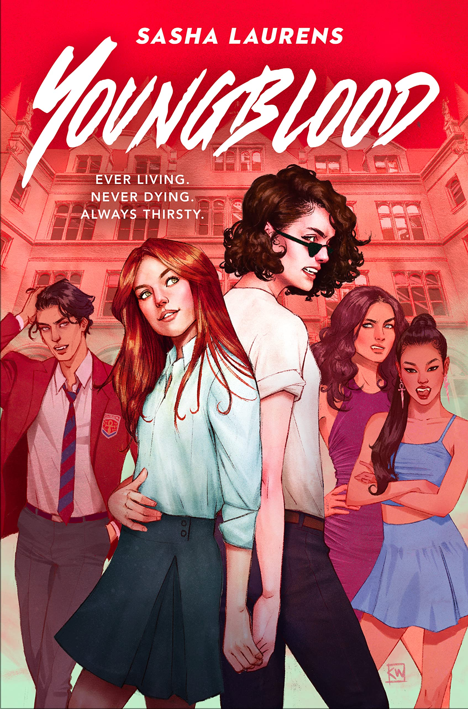

Read this month:
Youngblood by Sasha Laurens
Kat Finn and her mother can barely make ends meet living among humans. Like all vampires, they must drink Hema, an expensive synthetic blood substitute, to survive, as nearly all of humanity has been infected by a virus that’s fatal to vampires. Kat isn’t looking forward to an immortal life of barely scraping by, but when she learns she’s been accepted to the Harcote School, a prestigious prep school that’s secretly vampires-only, she knows her fortune is about to change.
Taylor Sanger has grown up in the wealthy vampire world, but she’s tired of its backward, conservative values—especially when it comes to sexuality, since she’s an out-and-proud lesbian. She only has to suffer through a two more years of Harcote before she’s free. But when she discovers her new roommate is Kat Finn, she’s horrified. Because she and Kat used to be best friends, a long time ago, and it didn’t end well.
When Taylor stumbles upon the dead body of a vampire, and Kat makes a shocking discovery in the school’s archives, the two realize that there are deep secrets at Harcote—secrets that link them to the most powerful figures in Vampirdom and to the synthetic blood they all rely on.

I'm Glad My Mom Died by Jennette McCurdy
A heartbreaking and hilarious memoir by Jennette McCurdy about her struggles as a former child actor—including eating disorders, addiction, and a complicated relationship with her overbearing mother—and how she retook control of her life.
Jennette McCurdy was six years old when she had her first acting audition. Her mother’s dream was for her only daughter to become a star, and Jennette would do anything to make her mother happy. So she went along with what Mom called “calorie restriction,” eating little and weighing herself five times a day. She endured extensive at-home makeovers while Mom chided, “Your eyelashes are invisible, okay? You think Dakota Fanning doesn’t tint hers?” She was even showered by Mom until age sixteen while sharing her diaries, email, and all her income.
In I’m Glad My Mom Died, Jennette recounts all this in unflinching detail—just as she chronicles what happens when the dream finally comes true. Cast in a new Nickelodeon series called iCarly, she is thrust into fame. Though Mom is ecstatic, emailing fan club moderators and getting on a first-name basis with the paparazzi (“Hi Gale!”), Jennette is riddled with anxiety, shame, and self-loathing, which manifest into eating disorders, addiction, and a series of unhealthy relationships. These issues only get worse when, soon after taking the lead in the iCarly spinoff Sam & Cat alongside Ariana Grande, her mother dies of cancer. Finally, after discovering therapy and quitting acting, Jennette embarks on recovery and decides for the first time in her life what she really wants.
Told with refreshing candor and dark humor, I’m Glad My Mom Died is an inspiring story of resilience, independence, and the joy of shampooing your own hair.

Educated by Tara Westover
Tara Westover was 17 the first time she set foot in a classroom. Born to survivalists in the mountains of Idaho, she prepared for the end of the world by stockpiling home-canned peaches and sleeping with her "head-for-the-hills bag". In the summer she stewed herbs for her mother, a midwife and healer, and in the winter she salvaged in her father's junkyard.
Her father forbade hospitals, so Tara never saw a doctor or nurse. Gashes and concussions, even burns from explosions, were all treated at home with herbalism. The family was so isolated from mainstream society that there was no one to ensure the children received an education and no one to intervene when one of Tara's older brothers became violent.
Then, lacking any formal education, Tara began to educate herself. She taught herself enough mathematics and grammar to be admitted to Brigham Young University, where she studied history, learning for the first time about important world events like the Holocaust and the civil rights movement. Her quest for knowledge transformed her, taking her over oceans and across continents, to Harvard and to Cambridge. Only then would she wonder if she'd traveled too far, if there was still a way home.
Educated is an account of the struggle for self-invention. It is a tale of fierce family loyalty and of the grief that comes with severing the closest of ties. With the acute insight that distinguishes all great writers, Westover has crafted a universal coming-of-age story that gets to the heart of what an education is and what it offers: the perspective to see one's life through new eyes and the will to change it.
Click image for book description.